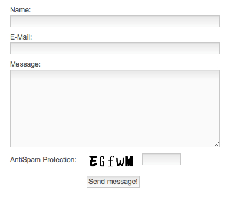
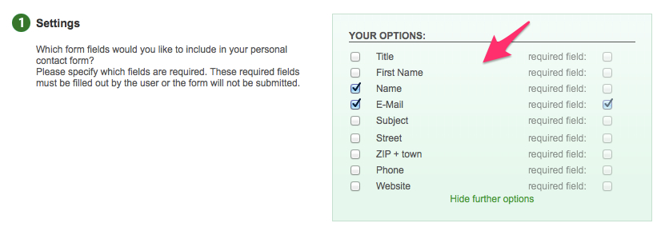
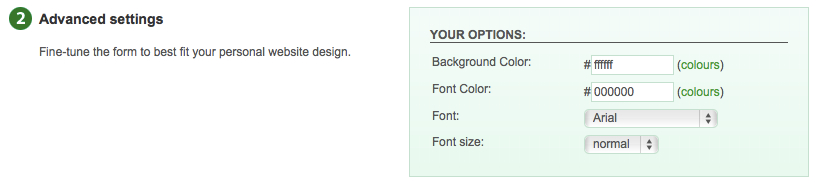
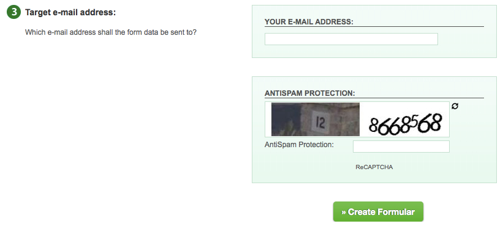
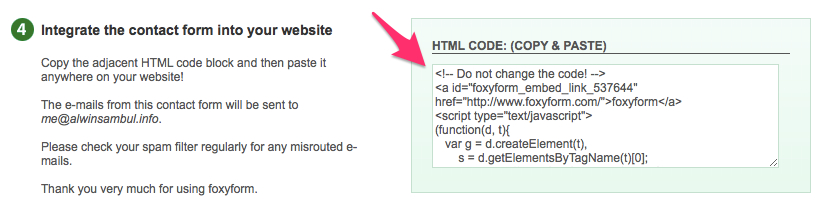
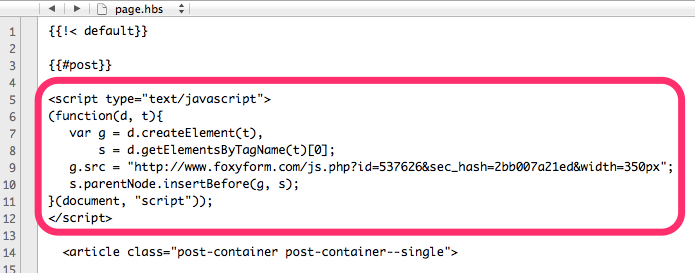
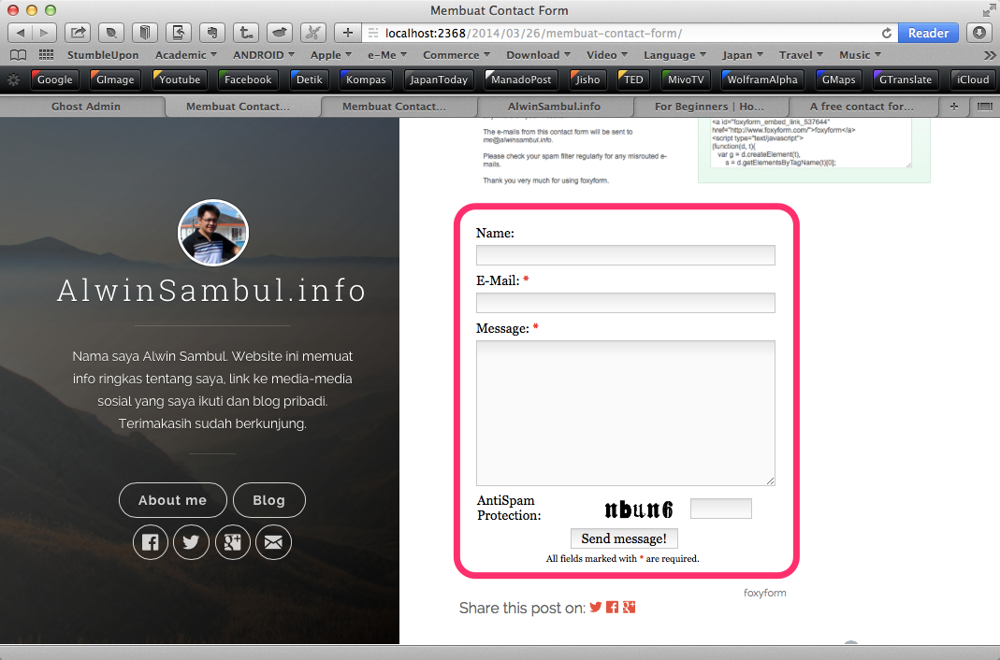

Membuat Contact Form Page di Ghost
Contact form adalah isian pada sebuah halaman web yang digunakan untuk mengirim email. Dengan adanya Contact form ini, pengunjung website kita bisa langsung mengirim email tanpa perlu menggunakan aplikasi email client. Gambar berikut ini adalah contoh sebuah contact form:

Sampai saat ini, Ghost belum menyediakan fasilitas Contact form secara native. Sebagai gantinya, kita perlu menggunakan layanan di luar Ghost. Salah satu layanan yang dapat digunakan untuk membuat Contact form adalah FoxyForm.
Berikut ini adalah langkah-langkah membuat contact form di FoxyForm dan menyisipkannya ke dalam Ghost:
1) Pertama-tama, masuklah ke website FoxyForm,
2) Pada bagian "YOUR OPTIONS", tentukan isian apa saja yang ingin digunakan:

3) Anda pun dapat melakukan pengaturan lain seperti warna latar, huruf, ukuran huruf dll.

4) Masukkan email address yang akan digunakan sebagai tujuan pengiriman pesan, isi kode angka untuk spam protection, dan klik tombol "Create Formular":

5) Jika berhasil, FoxyForm akan menampilkan sederet code (juga akan dikirimkan ke email anda) seperti ini:

6) Copy bagian <a>...</a> dari code tersebut dan paste ke post atau page editor Ghost.
Contoh:
<a id="foxyform_embed_link_537626" href="http://www.foxyform.com/">foxyform</a>
7) Untuk menambahkan contact form di page, buka dan edit file bernama page.hbs yang terletak di direktori theme aktif anda.
8) Copy bagian <script>...</script> dari code yang diberikan FoxyForm dan tempelkan dalam file page.hbs, tepatnya sebelum tag <article>.
Ini contoh code FoxyForm yang disisipkan di page.hbs:

9) Untuk menambahkan contact form di post, lakukan cara yang sama dengan langkah 7 dan 8 pada file post.hbs.
10) Pada panel preview, contact form hanya akan ditampilkan sebagai sebuah Link foxyForm. Jangan kuatir, ini normal.
11) Update post dan tampilkan post atau page yang baru saja anda buat. Ini contoh tampilan jadi dari post yang berisi contact form:
